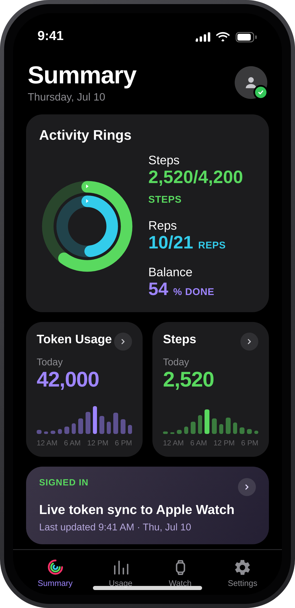
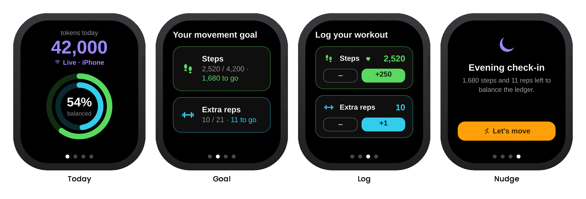
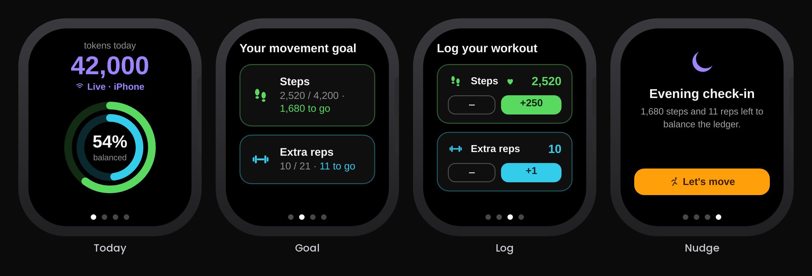

AI Tokenization Fitness
The Problem
Imagine someone building an online product with AI as a co-creator. Their token usage varies over time, which puts them under pressure to work within a limited budget or to cut future usage through various strategies. That pressure can turn into mental and physical strain.
Idea
I proposed linking token use to fitness via Apple Fitness: I set a sample parameter of 1,000 steps for every 10k tokens, or 5 extra reps in weight training for every 10k tokens consumed. This can supplement an existing goal or stand alone as one. Applying the negative reinforcement principle, tying AI usage to physical activity encourages accountability and positive fitness behavior change.


Function
The individual can connect their AI tool through a companion integration in the Apple Fitness iOS app that pulls real token usage and pushes it to the watch. A usage API client polls the provider's organization usage endpoint at regular intervals and sums the tokens.